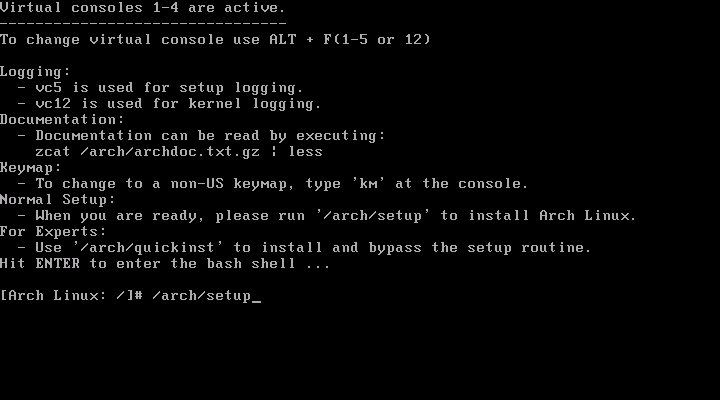
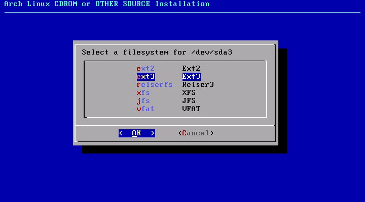
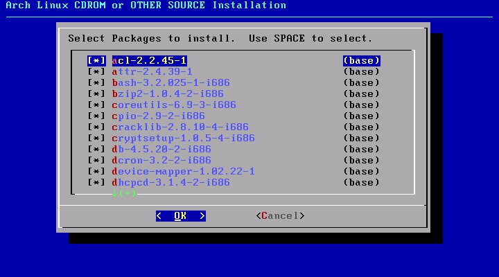
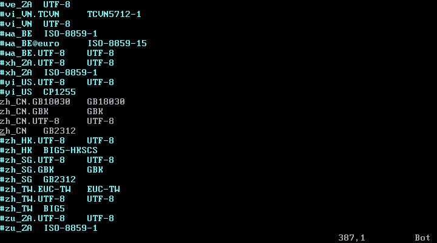

第 31 章 完美工作站 Archlinux
目录
简介
惜Fedora、SuSE，有点臃肿
gentoo、LFS，略显麻烦
一代天骄，Ubuntu
只知免费送光盘
深孚众望的 Ubuntu 变得越来越臃肿，越来越“Windows”；Gentoo 虽然能够灵活定制，不过所有的软件都使用源代码编译安装，却也有些过犹不及
Archlinux，既能够像 Ubuntu 那样使用二进制包(pacman)便捷的安装，又能够像 Gentoo 那样灵活定制(ABS)，是一个十分均衡的发行版，它还有许多夺目的亮点：
简约
Archlinux 信奉 UNIX 传统的 KISS 哲学，安装和配置十分容易，文件系统结构布局清晰
轻快
Archlinux 为 i686 进行优化，无论是系统的启动，还是运行程序，都给人以快马轻裘的感觉
灵活
Archlinux 安装后只有一个最基础的系统，你可以在这个基础上如搭积木般，使用 pacman 安装软件
对于想定制系统的朋友，在最小化系统上作加法，要比在臃肿系统中作减法来得容易
前卫
Archlinux 总是尽量保持系统中的软件为最新版本
编译系统
Archlinux 使用 ABS 系统简化琐屑的编译过程，并且用户可以通过 AUR 分享、交流 PKGBUILD
提示：
KISS: Keep It Simple, Stupid!
Archlinux 是完美的 工作站/桌面，但并不推荐使用它作服务器，因为太过前卫有可能会导致系统的不稳定
安装基本系统
大致上，安装 Linux 分为几个阶段：
前期准备
通过各种方式获取安装介质，进入安装作业平台。比如下载 ISO 映像刻录光盘，使用光盘引导，启动安装程序
选择安装源
选择通过安装介质安装还是通过网络下载的方式进行安装。如果通过网络安装，可能需要配置网络
准备磁盘
操作系统最终是安装在磁盘上的，所以要分割磁盘、格式化分区、挂载
选择、安装软件包
选择需要的软件。有些发行版如 Ubuntu LiveCD 安装时不能选择软件
配置系统
对系统进行各种配置，使其能良好运行
安装引导程序
以便启动时可以引导系统
新建用户
使用 root 用户进行操作存在一定风险，尽量建立一个用于日常操作的用户
前期准备
首先下载 Archlinux 安装介质。
有两种安装介质： ISO 和 USB ，其中 ISO 为光盘映像，用来刻录安装光盘； USB 为磁盘映像，可以恢复到 USB 移动存储设备
每种安装介质包含两种目标架构： i686 和 x86_64 ，其中 i686 适用于 奔腾Ⅱ™ 以上级别 CPU ； x86_64 只适用于 64 位 CPU
每种目标架构又包含两个版本： CORE 和 FTP Install ，其中 FTP Install 只包含作业平台，需要通过网络下载软件包；CORE 除了作业平台，还包含基本系统[75]
假设您下载了 archlinux-2008.06-core-i686.iso ，刻录并使用它引导，您会看到以下界面
Archlinux 提供几种不同的引导选项，你可根据自己需要选择。一般情况下，按回车即可。
稍等片刻，Archlinux 引导进入这个画面

该画面包括一些有用的安装信息，如安装日志的记录、文档的查看、键盘映射的更改等。我们直接在命令提示符后输入下列指令，启动 Archlinux 安装程序：
/arch/setup
作业平台
/arch/setup 是在安装介质中 FreeBSD 风格的安装脚本，安装 Archlinux ，其实就是进入作业平台后，运行这个脚本。
使用 Archlinux 安装光盘引导，就是进入作业平台的过程。作业平台通常包含：
内核
作业平台需要可以使用其它工具，正在运行着的系统是起码的条件，这就需要有内核
磁盘工具
将系统安装到磁盘上，必然要对分区进行相关操作
网络工具
现代 Linux 系统大都支持通过网络安装，各种网络工具也是必需的
包管理系统
在安装过程中，如果希望选择软件，通常需要包管理系统
否则就只能将预先打包的整个系统一古脑的恢复到机器上，且不能选择软件，如 Ubuntu LiveCD
编译工具链
如果采用编译的方式安装，则需要编译工具链，如 Gentoo LFS
基本工具集
以上组件可能会依赖其它的工具，而且安装光盘通常也被当作系统维护光盘，所以基本工具集是必需的
/arch/setup 脚本(安装程序)将在“字符图形”界面中调用上述工具:
选择安装源
如果使用已包含基本系统软件包的 CORE ，使用默认选项即可；如果通过 FTP/HTTP 下载软件包安装，可以选择第二项，安装程序会自动调用网络工具。
分割磁盘
接下来进入 Archlinux 安装主菜单。

现在需要准备硬盘，即对硬盘分区和挂载文件系统，相关基础概念请参阅 “分区概念”一节

- 自动分区(强烈不推荐)
- 对硬盘分区
- 设置挂载点
- 返回主菜单
安装程序会自动检测硬盘类型及容量，要求你选择硬盘，并调用硬盘分区程序 cfdisk

- 通过“上下方向键”选择分区，“左右方向键”、“TAB”或“首字母大写”切换操作选项
- New 创建分区，需要在 “Free Space”上操作
- Bootable 设置可引导标志
- Write 将分区方案写入分区表
推荐为以下目录建立分区：
/
根目录。系统将安装在这里，通常 5～10G 足够
/home
用户家目录。用户的所有文件都在这里，尽可能的大
swap
交换分区。物理内存的1～2 倍(如果内存足够大，也可以不建立此分区)
建立好分区后，将根目录所在的分区设置为 Bootable[76]

准备妥当后，按下 W 写入分区表，Q 退出
挂载分区
分割磁盘后，选择 DONE 返回准备硬盘菜单。接着，我们选择 Set Filesystem Mountpoints 来将分区挂载到文件系统上。
首先要求你挂载 swap ，我们选择 /dev/sda2。然后依次挂载 / 和 /home 目录。与挂载 swap 区不同的是，挂载后几个分区会要求你选择文件系统类型，推荐选择 XFS[77]。另外，挂载 /home 时，需要自己输入挂载点，按原名输入即可。

完成后，返回安装程序主菜单。
选择软件
接下来选择要安装的软件包。Archlinux 首先会要求选择安装介质，因为我们是从 CD-ROM 进行安装，所以保持默认。然后，我们选择 CD 驱动器，仍然默认。最后，选择软件包
软件包有四大类：

base
最基本的包
devel
包含一些软件编译工具
lib
包含应用程序所需的库文件
support
包含一些在网络和文件系统方面有用的包
使用空格键 标记/取消标记。当 Archlinux 安装程序提示你是否默认选中所有的包时，按 Yes 后会进入已标记分类包含软件的选择菜单，完成后按 OK 确认。

在开始安装前，安装程序将提示你是否保存 Pacman 缓存的软件包，我们选择 No。安装将调用 Pacman 安装你所选择的包，这个过程需要花一会时间。
配置系统
现在，我们将进入 Archlinux 安装过程中的一个重要环节，配置系统文件。Archlinux 安装程序先会询问是否使用 hwdetect，按推荐选择 Yes，并回答是否需要支持从 usb、firewire、pcmcia 等设备引导。
之后，我们需要选择文本编辑器，可选 nano 和 vim，选择后者。然后，我们就到了如下的配置画面：
配置的过程就是调用 Vim[78] 编辑器编辑以上配置文件。其中，需要重点关注的配置文件是：
/etc/rc.conf
/etc/rc.conf 是 Archlinux 最重要的配置文件。下面的选项有必要设置一下：
| 推荐值 | 可选值 | 说明 |
|---|---|---|
| LOCALE="en_US.utf8" | zh_CN.utf8 | 系统语言 |
| TIMEZONE="Asia/Shanghai" | UTC[a] | 时区 |
| HOSTNAME="myhost" | linuxtoy.org | 主机名 |
| MODULES=() | !pcspkr | 禁用扬声器 |
| INTERFACES=(eth0) | 网络接口 | |
| eth0="dhcp" | eth0 IP地址 netmask 子网掩码 broadcast 广播地址(该IP段最后一个地址“255”) | 接口地址设置 |
| DAEMONS=(syslog-ng !network netfs crond) | 守护进程以 ! 起始表示禁用，以 @ 起始表示后台运行 |
启动时运行的守护进程 |
[a] 如果安装了 Windows 系统，使用 UTC 可以避免各个系统时间不一致
/etc/locale.gen
这个文件包含系统所支持的区域及字符集。对中文用户来说，你需要去掉包括 zh_CN 这几行行首的注释符 #

/etc/fstab
该文件确定文件系统设置及挂载点，可以不用编辑，不过查看一下是否正确还是有必要的。
设置 root 密码
为 root 帐号设置一个密码，需要重复输入确认。
设置 Pacman 仓库镜像
为 Pacman 包管理系统设置仓库镜像，选择一个较快的地址。
安装引导程序
系统配置完成后，回到主菜单。进入下一步，安装系统引导程序。我们选择 GRUB 。此时，安装程序让你查看 /boot/grub/menu.lst 的内容。接着，要求选择安装的位置，我们选 MBR，主引导记录

退出安装
如果一切顺利，你已经完成了 Archlinux 的安装。现在是时候退出了。按提示我们在命令行输入下列指令，以便重启系统：
reboot
新建用户
重启系统后，输入 root 帐号和密码登录系统。

第一件事，建立一个普通的帐号。可以通过以下命令完成：
useradd -m -s /bin/bash kardinal
这将添加一个名为 kardinal 的用户。接着，为该账号设置密码：
passwd kardinal
使用 visudo 命令将该账号加入 sudoers 列表
确认无误后，可以锁定 root 账号，以绝后患
su kardinal #切换到普通账号，如果能够锁定，说明这个账号是 sudoers
sudo usermod -L root
至此，Archlinux 基本系统安装完成
[75] 将 CORE 中的软件包移除，差不多就是 FTP Install
[76] 如果为
/boot目录准备了独立的分区，则要将该分区设置为 Bootable[77] 大多数 Linux 系统中的引导程序 grub，不支持从 XFS 分区启动，解决的办法是将
/boot目录挂载到一个独立的 ext2 分区……不过 Archlinux 中的 grub 不存在这个问题传说 ext4 文件系统也十分优秀，不过大多数发行版还没有正式支持
[78] 参阅第 24 章 Vim 编辑器
更新系统
通过路由器连接到网络，只要设置 /etc/rc.conf 文件中的 eth0 字段为 dhcp 或者 固定IP。如果通过 ADSL(PPPoE) 拨号上网，则要执行 pppoe-setup 脚本，设置 ADSL 连接，然后通过以下命令连接/断开网络：
/etc/rc.d/adsl start
/etc/rc.d/adsl stop
更新 Archlinux 系统 (需要 root 权限，如果是普通用户，可以 sudo 执行或者 su 切换用户)：
pacman -Syu
安装 X.Org
X.Org 是 X Window 的开源实现。如果我们要在 Archlinux 中运行图形化的程序，那么 X.Org 是必不可少的。执行命令：
pacman -S xorg
该指令将为你安装 X.Org 所必需的包，包括 X.Org 服务器、工具、字体、键盘驱动、鼠标驱动、显卡驱动等等
需要注意的是，默认的 X.Org 安装可能并没有包含你的显卡驱动程序。因此，你需要单独为你的显卡安装驱动。你可以通过下列命令来进行搜索：
pacman -Ss xf86-video #搜索相关驱动
pacman -S xf86-video-vmware #安装 VMware 驱动
pacman -S nvidia #安装 nVIDIA 驱动
pacman -S nvidia-96xx #安装旧版 nVIDIA 驱动
pacman -S nvidia-71xx
X.Org 对于即插即用的支持越来越好，不过有时还是要使用 xorgconfig 工具来生成 xorg.conf 文件。xorgconfig 是一个交互式的程序，它会向你问一些有关鼠标、键盘、显示器、显卡等方面的问题。根据你的实际情况回答即可。
如果需要，可以手工调整 X.Org 配置文件，参见“X服务器”一节
安装桌面环境
登录管理器
我们选择 GDM 作为登录管理器
pacman -S gdm
安装完成后，编辑 /etc/rc.conf，在 DAEMONS 字段中添加 gdm
DAEMONS=(syslog-ng network netfs crond gdm)
Xfce 桌面环境
如何选择桌面环境，是一个倍受争议话题。对于新手，我推荐 Xfce ，它有相对玲珑的体形和丰富的功能。
pacman -S xfce4
Shell
Zsh 十分强大和人性化，推荐
pacman -S zsh
终端
在 Linux 中工作，未必一定需要命令行，不过如果你通过读这本书来学 Linux，那么你一定得安个称手的终端：
pacman -S rxvt-unicode
中文字体
通过以下命令安装中文字体
pacman -S ttf-arphic-uming ttf-arphic-ukai
不过这两种字体恐怕不能取悦大家挑剔的眼光。你可以自己获取心仪的字体并安装到系统，参阅“XFT字体”一节
中文输入法
在 Archlinux 中包含 SCIM 和 Fcitx 中文输入法。我们选择安装后者：
pacman -S fcitx
当 Fcitx 安装完成后，将下列内容添加到你用户主目录中的 .profile 中，以便让 Fcitx 自动启动：
export XMODIFIERS=@im=fcitx
export GTK_IM_MODULE=xim
export QT_IM_MODULE=xim
fcitx &
关于中文环境的设置，可以参阅“locale 策略”一节
ALSA
首先确定一下，你需要声音么？你要是想要的话你就说话嘛，你不说我怎么知道你想要呢，虽然你很有诚意地看着我，可是你还是要跟我说你想要的。你真的想要吗？那你就拿去吧！你不是真的想要吧？难道你真的想要吗？
看来你真的想要，实际上，ALSA 已被包含到 2.6 版的内核中。因此，我们只需安装 ALSA 的相关工具即可
pacman -S alsa-utils
接着，我们将当前用户添加到 audio 用户组，以便使用声卡设备 (注意把 kardinal 换成你的用户名)：
gpasswd -a kardinal audio
同时，将 alsa 添加到 /etc/rc.conf 配置文件的 DAEMONS 中：
DAEMONS=(syslog-ng network netfs crond gdm alsa)
ALSA 默认是静音状态，你需要先打开音量：
sudo alsaconf #可能你需要配置一下先
alsamixer #使用“左右方向键”选择，使用“上下方向键”调节，ESC 键退出
应用软件
网络浏览
Firefox 几乎是 Linux 平台的标准装备
pacman -S firefox firefox-i18n
- firefox-i18n 为语言包，安装后可以使 Firefox 界面显示中文，不安也可以正常显示中文页面
Opera 使用 QT 图形库，推荐 KDE 桌面环境下使用
pacman -S opera
下载工具
命令行下载工具有 wget。此外，aria2 也不错，它支持断点续传和多线程下载：
pacman -S aria2
BitTorrent 下载工具，我们选用 Deluge：
pacman -S deluge
其他的包括 Azureus、rTorrent 等。
另外，我们把 aMule 也安装上：
pacman -S amule
为了能够让 aMule 直接从 Firefox 浏览器中处理 ed2k 链接，我们在 Firefox 的 about:config 中新建字符串 network.protocol-handler.app.ed2k，并将其设为 /usr/bin/ed2k。
办公处理
“所见即所得”的办公套件，首推 OpenOffice.org
pacman -S openoffice-base openoffice-zh_cn
为了让 OpenOffice.org 运行于 GTK 2 模式，我们向 ~/.bashrc 添加如下内容：
export OOO_FORCE_DESKTOP=gnome
图像编辑
图像编辑软件首选 GIMP，要安装它可以执行命令：
pacman -S gimp
矢量图形编辑软件可以使用 Inkscape：
pacman -S inkscape
用 Scrot 截图：
pacman -S scrot
即时通讯
要与朋友即时聊天，我们可以选用 Pidgin，它支持 Gtalk、MSN、QQ 等多种协议：
pacman -S pidgin
如果安装 QQ for Linux ，只要下载 tar 包，解压后运行即可
音影播放
音乐播放软件我选择 Quod Libet，你可以凭自己的喜好来安装：
pacman -S quodlibet
其他的音乐播放器包括 MPD、Audacious、Exaile、Amarok 等。
如果是看电影的话，MPlayer 不错，同时也加上浏览器插件和常用解码器：
pacman -S mplayer mplayer-plugin codecs gstreamer0.10-bad gstreamer0.10-ugly \
gstreamer0.10-ffmpeg gstreamer0.10-mad gstreamer0.10-mpeg2dec
如果需要 MPlayer 的前端，那么可以安装 SMPlayer：
pacman -S smplayer
当然，另一个选择 VLC 也挺好：
pacman -S vlc
新闻阅读
RSS 离线阅读软件，我们安装 Liferea：
pacman -S liferea
图像查看
GQview 是一个轻快的图像查看软件：
pacman -S gqview
文本编辑
如果要求简单的话，可以选用 Gedit、Leafpad：
pacman -S gedit
pacman -S leafpad
Scite 功能强大，操作简单，推荐
pacman -S scite
Vim 似乎也是 Linux 系统的标准装备，需要图形界面的话，可以加上 Gvim：
pacman -S vim
Emacs 的最新版本为 emacs-cvs
pacman -S emacs-cvs
如果只是喜欢 Emacs 的操作方式，可以安装轻量级的 类Emacs 编辑器 Jed
pacman -S jed
FTP 客户端
Lftp 是命令行的 ftp 客户端，但是它很、十分、非常、以及特别的好用
pacman -S lftp
Lftp 的使用方法参见第 42 章 使用 lftp
图形化的有 gFTP、FileZilla 等。
光盘刻录
我们选择 K3b，你可以通过以下指令安装：
pacman -S k3b
为了让当前用户能够使用光盘刻录设备，需要将其添加到 optical 用户组中 (请将 kardinal 替换成你的用户名)：
gpasswd -a kardinal optical
文档查看
查看 PDF 文档，可以安装 Evince：
pacman -S evince
CHM 文档，可以选用 KchmViewer。
其它工具
计算器：
pacman -S gcalctool
压缩/解压 rar、zip 等格式：
pacman -S unrar unzip
另外，图形化的可以用 Squeeze：
pacman -S squeeze
Flash 插件：
pacman -S flashplugin
Java 支持：
pacman -S jre
词典翻译，我们安装 StarDict：
pacman -S stardict
词典文件需从 StarDict 官方网站 下载，并释放到 /usr/share/stardict/dic/ 目录。
Compiz Fusion
Compiz Fusion 合并自 Compiz 和 Beryl，它不仅将 Linux 桌面带入了 3D 环境，而且包含许多既丰富又渲丽的效果。
准备配置文件
要在 Archlinux 中安装 Compiz Fusion，首先确保 /etc/X11/xorg.conf 文件的正确配置。以 NVIDIA 显卡为例：
#Module 部分载入 GLX 模块：
Load "glx"
#Device 部分添加下列选项：
Option "AddARGBGLXVisuals" "True"
#以上是针对较新卡的配置，如果是使用旧卡的话，那么还应加上：
Option "RenderAccel" "true"
Option "AllowGLXWithComposite" "True"
#添加 Extensions 部分：
Section "Extensions"
Option "Composite" "Enable"
EndSection
安装 Compiz Fusion
现在，让我们来安装 Compiz Fusion，执行下列命令：
pacman -S compiz-fusion
这将安装 Compiz Core、Compiz Fusion 插件、Compiz Fusion 设置管理器、Emerald 及主题、Fusion Icon 等。
另外，GNOME 用户可以安装窗口装饰：
pacman -S compiz-fusion-gtk
KDE 用户为：
pacman -S compiz-fusion-kde
自动启动 Compiz Fusion
要启动 Compiz Fusion，可以运行 Fusion Icon，它是一个系统托盘程序，通过它可以很方便的切换：
fusion-icon
从 Fusion Icon 中，我们可以将窗口管理器切换为 Compiz，窗口装饰切换为 Emerald。此外，该工具也可以调用 Compiz Fusion 设置管理器及 Emerald 主题管理器。具体的调整过程，你不妨亲自试试。
如果打算让 Compiz Fusion 自动启动，可以将 Fusion Icon 加入 GNOME 会话的启动程序组中。方法是，点击“系统 → 首选项 → 会话”，在启动程序标签中点击“添加”按钮，然后输入下列信息：
| 字段 | 值 |
|---|---|
| 名称 | Compiz Fusion |
| 命令 | fusion-icon |
| 注释 | Compiz Fusion |
Avant Window Navigator
Avant Window Navigator 是一个漂亮的 Dock 程序，提供程序启动、窗口管理等，并包含许多插件。
你可以使用下列命令来安装 AWN：
pacman -S avant-window-navigator
AWN 可通过“应用程序 → 附件 → Avant Window Navigator”启动。自动启动的设置可以参考 Compiz Fusion 的做法。
Pacman
Pacman 是 Archlinux 默认的包管理工具，由 Archlinux 的创始人 Judd Vinet 开发。Pacman 可以很好的处理依赖关系、通过网络使用软件仓库。使用 Pacman，你不仅可以更新 Archlinux 的整个系统，而且能够对包进行管理，包括安装、删除、升级等。同时，Pacman 也允许你搜索包和查看有关包的信息。
配置
Pacman 的配置文件为 /etc/pacman.conf，可以在其中设定使用的软件源分支
[core]
# 在这里添加你的首选服务器，它们将被优先使用
Include = /etc/pacman.d/mirrorlist
[extra]
# 在这里添加你的首选服务器，它们将被优先使用
Include = /etc/pacman.d/mirrorlist
[community]
# 在这里添加你的首选服务器，它们将被优先使用
Include = /etc/pacman.d/mirrorlist
#[testing]
#Include = /etc/pacman.d/mirrorlist
# 自定义软件仓库的示例
#[custom]
#Server = file:///home/custompkgs
# archlinuxfr 软件仓库
[archlinuxfr]
Server = http://repo.archlinux.fr/i686
指定 Pacman 使用的下载工具
# 默认(不指定的情况下)为 wget
#XferCommand = /usr/bin/wget --passive-ftp -c -O %o %u
# 使用 aria2 下载 ，删除下一行行首注释符 `#`
#XferCommand = aria2c -s 5 -m 5 -d / -o %o %u
# 使用 curl 下载
#XferCommand = /usr/bin/curl %u > %o
命令
Pacman 是一个命令行工具，这意味着当你执行下面的命令时，必须在终端或控制台中进行。
更新系统
在 Archlinux 中，使用一条命令即可对整个系统进行更新：
pacman -Syu
如果你已经使用 pacman -Sy 将本地的包数据库与远程的仓库进行了同步，也可以只执行：
pacman -Su
安装软件包
这个命令你应该见过无数次了：
pacman -S 软件包名称
- 如果同时安装多个包，用空格分隔包名
其它用法：
# 先同步包数据库再安装
pacman -Sy 软件包名称
# 显示一些操作信息后执行安装
pacman -Sv 软件包名称
# 安装本地软件包，其扩展名为 pkg.tar.gz
pacman -U 软件包名称
删除软件包
# 只删除软件包，不删除该软件包的依赖
pacman -R 软件包名称
# 删除软件包的同时，也将删除其依赖
pacman -Rs 软件包名称
# 删除软件包、依赖关系、配置文件
pacman -Rsn 软件包名称
# 删除包时不检查依赖
pacman -Rd 软件包名称
搜索
通过关键字搜索软件包
pacman -Ss `关键字`
搜索已安装的包
# 查看软件包信息
pacman -Qi 软件包名称
# 列出软件包的文件
pacman -Ql 软件包名称
# 查看某一文件属于哪个软件包
pacman -Qo 文件名
假如想知道某一程序的相关信息，可以配合 whereis 使用 pacman
`whereis sudo`
sudo: /usr/bin/sudo /usr/share/man/man8/sudo.8.gz
`pacman -Qo /usr/bin/sudo`
/usr/bin/sudo is owned by sudo 1.6.9p18-1
`pacman -Qi sudo`
Name : sudo
Version : 1.6.9p18-1
URL : http://www.sudo.ws/sudo/
Licenses : custom ISC
Groups : None
Provides : None
Depends On : glibc pam
Optional Deps : None
Required By : None
Conflicts With : None
Replaces : None
Installed Size : 308.00 K
Packager : Allan McRae <allan@archlinux.org>
Architecture : i686
Build Date : Sat 15 Nov 2008 06:17:33 AM CST
Install Date : Fri 21 Nov 2008 12:20:07 PM CST
Install Reason : Explicitly installed
Install Script : No
Description : Give certain users the ability to run some commands as root
`pacman -Ql sudo`
sudo /etc/
sudo /etc/pam.d/
sudo /etc/pam.d/sudo
sudo /etc/sudoers
sudo /usr/
sudo /usr/bin/
sudo /usr/bin/sudo
sudo /usr/bin/sudoedit
sudo /usr/lib/
sudo /usr/lib/sudo_noexec.so
sudo /usr/sbin/
sudo /usr/sbin/visudo
sudo /usr/share/
sudo /usr/share/licenses/
sudo /usr/share/licenses/sudo/
sudo /usr/share/licenses/sudo/LICENSE
sudo /usr/share/man/
sudo /usr/share/man/man5/
sudo /usr/share/man/man5/sudoers.5.gz
sudo /usr/share/man/man8/
sudo /usr/share/man/man8/sudo.8.gz
sudo /usr/share/man/man8/sudoedit.8.gz
sudo /usr/share/man/man8/visudo.8.gz
其他
# 只下载软件包，不安装
pacman -Sw 软件包名称
# Pacman 下载的软件包缓存于 /var/cache/pacman/pkg/ 目录。清理未安装的包
pacman -Sc
# 清理所有缓存的文件
pacman -Scc
# 搜索孤立软件包
pacman -Qdt
编译系统
备份、恢复与迁移
备份 Linux 系统，推荐使用 tar。使用 archlinux-2008.06-core-i686 光盘启动系统[79]，登录“作业平台”后，首先挂载文件系统
注意：备份、恢复、迁移等过程，都要先进行这一步
#首先将两个工作目录定义为环境变量，这样条理更清晰
export FROM="/mnt/from" #定义变量 `FROM`，待备份的文件系统挂载于此
export TO="/mnt/to" #定义变量 `TO`，备份文件存放路径
mkdir -p $FROM $TO #创建工作目录
#假设待备份的系统位于 /dev/sda1 分区
mount /dev/sda1 $FROM
#如果将系统中的目录挂载到其它分区，例如将 /boot 挂载于 /dev/sda2 ，还要继续挂载此目录
mkdir $FROM/boot
mount /dev/sda2 $FROM/boot
mkdir $FROM/home
mount /dev/sda3 $FROM/home
……
#假设将备份文件存放于 /dev/sda5 分区
mount /dev/sda5 $TO
使用 tar(参见“压缩解压”一节) 命令备份：
cd $FROM
tar -zcvf $TO/backup.tgz \
--exclude=backup.tgz \
--exclude=mnt/* \
--exclude=proc/* \
--exclude=sys/* \
*
系统更新后，可以使用以下命令，在原来备份的基础上进行差异备份
#查找最近改动的文件，生成文件列表
find $FROM -mtime -1 -print> filelist
#根据文件列表进行差异备份
tar -zcv -T filelist -f $TO/backup.tgz
恢复时，使用以下命令
tar zxvpf $TO/backup.tgz -C $FROM
在某一硬件架构中，Linux 中大部分文件与硬件无关。所以，将备份的系统迁移到其它机器上[80]，是可行的
恢复后，有三个文件需要重新编辑：/boot/grum/menu.lst、/etc/fstab、/etc/X11/xorg.conf
使用 blkid，输出磁盘设备的 UUID，根据实际情况编辑这两个文件
blkid >> /etc/fstab
blkid >> /boot/grub/menu.lst
使用 grub 命令安装引导器，参见“Grub 安装”一节
[79] 也可以使用其它 LiveCD
[80] 例如将虚拟机中安装的 Linux 系统迁移到真实机器上